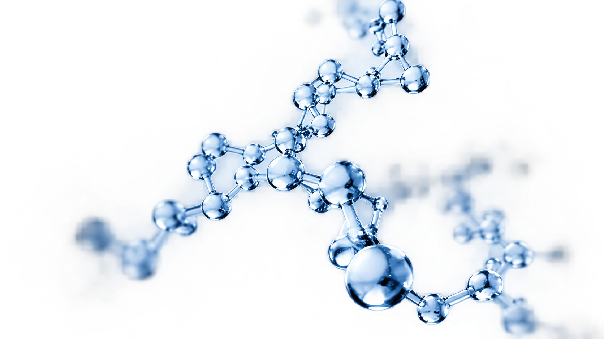
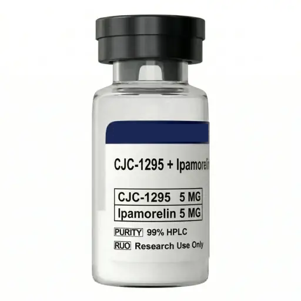
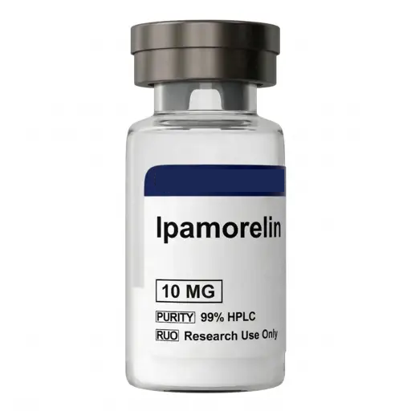
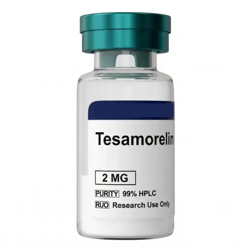
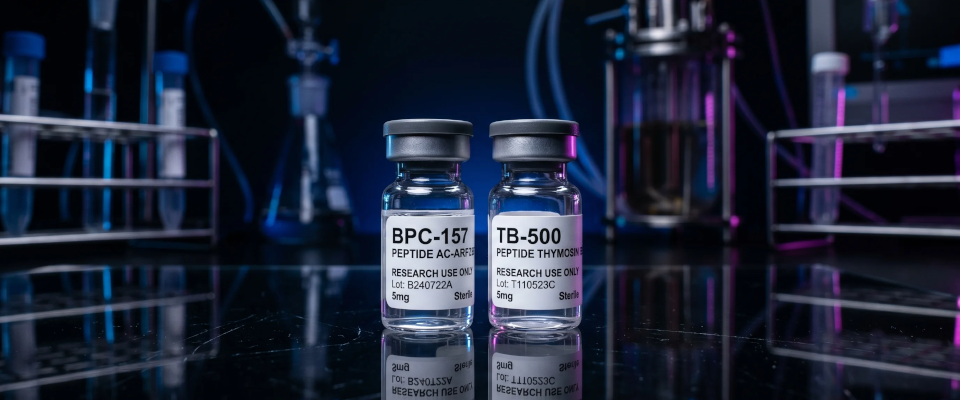

Research Grade
Estandares de pureza
para investigacion
Investigacion peptidica
DISEÑADO
PARA LA PRECISIÓN.
Desarrollamos y producimos peptidos para investigacion cientifica con los mas altos estandares de pureza, trazabilidad y consistencia.

Estandares de pureza
para investigacion
Procesos documentados
y trazables
Resultados verificados
por metodos analiticos
Enfocados en el avance
de la investigacion
El valor de la precision
En Peptidos, combinamos experiencia cientifica, tecnologia avanzada y rigurosos controles de calidad para ofrecer peptidos confiables y reproducibles para la comunidad cientifica.
Conocer mas
Nuestro metodo
Cada paso cuenta.
Diseno y optimizacion
de secuencias peptidicas.
Sintesis controlada
bajo condiciones optimizadas.
Purificación avanzada para
máxima pureza.
Caracterización analítica
y control de calidad.
Areas de investigacion
Soluciones para diversas areas de investigacion.



Peptidos investigados en mecanismos relacionados con longevidad y envejecimiento.
→Trazabilidad total
Desde la sintesis hasta la caracterizacion final, cada lote es documentado y analizado para garantizar resultados confiables y reproducibles.
Conocimiento aplicado
Conocimiento que impulsa la ciencia.

Nuestro compromiso
Somos un laboratorio dedicado al desarrollo de peptidos de alta calidad para investigacion cientifica.